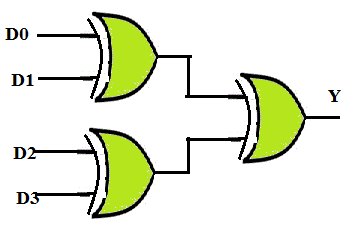
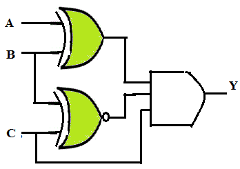

Q1. A four input XOR logic has inputs ABCD = 1011. The output of the XOR gate would be ___________.
A
Logic 0
B
Logic 1
C
Don’t Care
D
None of these
Ans is B
Q.2 ___________gates can be used as parity generators and checkers.
A
AND
B
OR
C
XOR
D
NOT
Ans is C
Q3. Analyze and obtain the parity output Y for the even parity generator for the data input D0D1D2D3 = 0000.

A
Y =1
B
Y = 0
C
Y = X
D
None of these
Ans is B
Q4. Determine the input conditions needed to produce Y = 1 for the circuit shown below.

A
ABC = 000
B
ABC = 001
C
ABC = 011
D
ABC=111
Ans is C
Q 5. A two input XNOR gate can be used to produce a high output when the two inputs match exactly. Select valid option.
A
TRUE
B
FALSE
C
Insufficient data
D
None of these
Ans is A